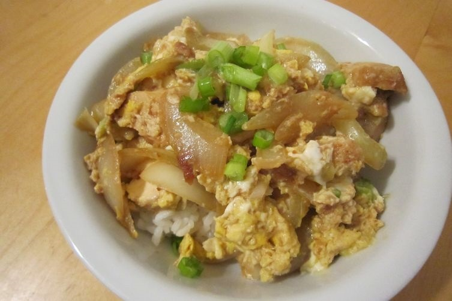

My Favorite Recipes
Chicken Teriyaki and Nectarine Sushi
Since I first discovered that hot dogs go great in sushi, I've been fascinated with putting odd things in sushi. This is one of my best recipes. I cook teriyaki chicken and onions, and instead of eating them in a bowl with some rice like a normal person, I take a piece of seaweed and some sushi rice, and roll it up together with some nice cold fresh nectarine. The crisp, sweet bite of the fruit blends incredibly well with the flavor and texture of teriyaki chicken. I've never had anyone turn down seconds.


Biscuits and Tomato Gravy
When I make biscuits from scratch, it's a minimum hour and a half process, and my biscuits are the kind that are dry and crumbly enough to soak up gravy and sauces. Often times I just use a can of pre-made biscuits to bake, but there's no substitute for homemade tomato gravy. People often think it's odd, but tomato gravy is basically just the same as sausage gravy, but with tomatoes, using a reaux made of bacon rather than a sausage one, with tomatoes substituting for milk. It's also delicious if done right.
Oyakodonburi
A Japanese dish that literally means "mother and child, in a bowl" because of the fact that it combines chicken and egg. It's a hearty fish- and soy-based broth with lots of onions and chicken. Scrambled eggs are cooked floating directly on top so that they absorb the broth and take the shape of the pot. Theoretically, the "donburi" is a particular size of bowl, the same shape as the pot, so that the mixture can be scooped directly into the shape of the bowl, attop rice. However, I often omit the "donburi" and just cook it in a big pot to eat family style.

Balsamic Mushroom Chicken
One of my favorite recipes for pan-fried chicken. The mushroom balsamic sauce is cooked directly with the fried chicken so that it soaks into the light breading. Extremely flavorful, and great to pour over and dip in some garlic mashed potatoes.

Connect with me:


My favorite things to cook (and eat):